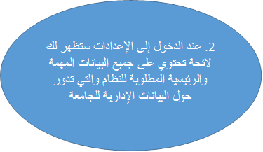
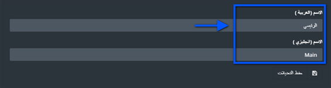
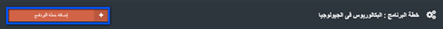
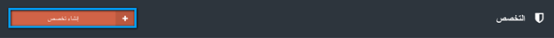
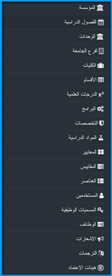
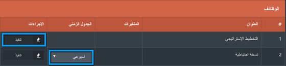

الإعدادات
جدول المحتويات ¶
- إدارة المؤسسة
- الفصل الدراسي
- إدارة الوحدات المتنوعة
- إدارة أفرع الجامعة
- إدارة الكليات
- إدارة الأقسام
- إدارة الدرجات العلمية
- إدارة البرامج
- إدارة التخصصات
- إدارة المواد الدراسية
- إدارة المعايير في الإعدادات
- إدارة المقاييس في الإعدادات
- إدارة العناصر في الإعدادات
- إدارة المستخدمين في الإعدادات
- إدارة المسميات الوظيفية في الإعدادات
- إدارة الوظائف في الإعدادات
- الإشعارات
- الترجمات
- إدارة هيئات الإعتماد
1. إدارة المؤسسة ¶
تحتوي المؤسسة على مجموعة من البيانات العامة حول المؤسسة وهويتها، ويتم الدخول لها وتعبئتها من خلال المشرف الرئيسي للنظام.
-
للدخول إلى المؤسسة ، يجب الذهاب أولاً إلى الوحدة البنائية " الإعدادات" المتواجدة في الشريط الجانبي.


-
قم بتغيير البيانات المطلوبة من خلال النقر على الصندوق أو من خلال تحميل الصورة للحقل المطلوب ، ومن ثم أنقر على "حفظ التعدلات".

2. الفصل الدراسي ¶
يجب استخدام جدير مع الفصول الدراسية الموجودة في الجامعة، ولكن في بعض الأحيان قد تحتاج هذه الفصول إلى تعديل، أو إضافة فصل دراسي جديد، وسيقوم المشرف الرئيسي بإضافة هذه الفصول الدراسية ولكن أولاً يجب عليه تسجيل الدخول على النظام.
-
اولاً يجب الذهاب إلى الوحدة البنائية " الإعدادات" من خلال اللائحة الجانبية.
-
سوف يظهر لك لائحة تحتوي على جميع الفصول الدراسية السابقة التي تمت إضافتها مسبقاً للنظام أو
تم أخذها عن طريق الإرتباط مع الجامعة، وكل فصل من هذه الفصول الدراسية المضافة يمكن القيام بعدد
من الإجراءات عليها من هذه الإجراءات الحذف والتعديل.
حقل الفصل الدراسي الحالي يظهر فيما إذا كان العمل على هذا الفصل الدراسي بالإعتماد على التاريخ، كما ستلاحظ ان الفصل الدراسي الذي تم سحبه من الجامعات قد يحتوي أولا يحتوي على تاريخ بدء الفصل الدراسي وتاريخ الانتهاء منه . لإضافة فصل دراسي جديد أنقر على "إنشاء فصل دراسي".
-
في شاشة إضافة فصل دراسي قم بإدخال اسم الفصل الدراسي باللغتين العربية والإنجليزية في الحقل المخصص لها
ومن ثمّ قم بإدخال تاريخ بدء الفصل وتاريخ الإنتهاء منه
وفي النهاية قم بالنقر على زر "حفظ التعديلات" لحفظ البيانات المدخلة للفصل الدراسي .
-
بعد أن يتم حفظ البيانات الجديدة للفصل الدراسي سوف يتم العودة إلى لائحة الفصول الدراسية تلقائياً،
وسوف يظهر الفصل الدراسي الذي تمت إضافته في آخر اللائحة، مع ظهور اشعار يبين أن العملية تمت بنجاح.
3. إدارة الوحدات المتنوعة ¶
داخل أي مؤسسة تعليمية يوجد مجموعة من الوحدات مهمتها مساعدة الوحدة التعليمية في عملها ، وهي مكملة لها أيضاً ، من هذه الوحدات: شؤون الطلبة، شؤون الموظفين، القبول والتسجيل، خدمات الطلاب وغيرها من الوحدات. جميع هذه الوحدات تساهم في رفع جودة المؤسسة، ويمكن للمشرف الرئيسي أن يقوم بإضافتها على النظام أو يمكن أخذها من خلال الإرتباط مع قواعد بيانات الخاصة بالجامعة
-
اولاً يجب الذهاب إلى الوحدة البنائية " الإعدادات" من خلال اللائحة الجانبية.
- سوف يظهر لك جميع الوحد التي تم إضافتها مسبقاً للنظام أو تم أخذها عن طريق الارتباط مع قواعد البيانات الخاصة بالمؤسسة ، كما ستظهر مجموعة من الإجراءات التي يمكن القيام بها على هذه الوحد من تعديل وحذف، بالإضافة إلى امكانية إضافة وحدة جديدة
-
لإضافة وحدة جديدة على النظام أنقر على " إنشاء وحدة"

-
قم بإضافة اسم الوحدة باللغتين العربية والإنجليزية ومن ثم أنقر على "حفظ التغييرات"
-
في حال وجود خطأ بالبيانات الخاصة بالوحدة أنقر على "تعديل"
-
عند النقر على "مهمة" سوف يظهر صندوق حوار جديد لإضافة المهمة باللغتين العربية والإنجليزية،
قم بتعبئة كلا الحقلين بالبيانات الخاصة بمهمة المؤسسة ، بعد الإنتهاء من تعبئة البيانات أنقر على "حفظ"
سوف تظهر رسالة توضح أن العملية تمت بنجاح .
4. إدارة أفرع الجامعة ¶
بعض المؤسسات التعليمية تحتوي على عدد مختلف من الأفرع والتي تتواجد في أكثر من منطقة، ولكن في بعض الأحيان قد تحتاج هذه الأفرع إلى تعديل بياناتها ، أو إضافة فرع جديد، وسيقوم المشرف الرئيسي بإضافة هذه الأفرع إلى نظام جدير.
-
اولاً يجب الذهاب إلى الوحدة البنائية " الإعدادات" من خلال اللائحة الجانبية.
-
سوف يظهر لك جميع الأفرع التي تمت إضافتها على النظام مسبقاً، وفي حال أردتَّ إضافة فرع جديد للمؤسسة قم بالنقر على "إنشاء فرع جامعة"
-
قم بتعبئة البيانات المطلوبة وهي اسم الفرع باللغتين العربية والإنجليزية

-
أنقر على "حفظ التعديلات ".
-
سوف تظهر لك رسالة توضح أن عملية إضافة فرع جديد للمؤسسة قد تم بنجاح.
5. إدارة الكليات ¶
لا بد من وجود مجموعة من الكليات في نظام جدير، كما أنه لا بد من إعطاء صلاحيات للمشرف الرئيسي بحيث تمكّنه من القيام بإضافة، تعديل وإزالة بعض الكليات الموجودة في المؤسسة، ويشترط على المشرف الرئيسي للنظام أن يقوم بتسجيل دخوله إليه قبل القيام بأي من تلك العمليات.
-
اولاً يجب الذهاب إلى الوحدة البنائية " الإعدادات" من خلال اللائحة الجانبية.
سوف تظهر لائحة تتضمن جميع كليات المؤسسة التعليمية، ولكل واحدة منها سوف تظهر الأهداف والغايات الخاصة بها، وكما ذكرنا سابقاَ فإنه يمكن القيام ببعض الإجراءات على هذه الكليات كالتعديل والحذف
-
.لإضافة كلية جديدة على النظام أنقر على "إنشاء كلية"
-
في صفحة الإضافة قم باختيار أحد أفرع الجامعة المدرجة سابقاً، ومن ثم قم بإدخال اسم الكلية باللغتين العربية والإنجليزية،
تعد هذه الحقول هي الحقول الرئيسية المطلوب تعبئتها، ويمكن إضافة حجم ومساحة بناء الكلية .
-
قم بالنقر على "حفظ التعديلات" بعد الإنتهاء من تعبئة البيانات.
بعد الانتهاء سوف يظهر إشعار يوضح أن العملية تمت بنجاح ، وسوف تظهر الكلية المضافة في آخر اللائحة ، هذه الكلية سوف تحتاج إلى تعبئة كل من: المهمة، الرسالة، الغاية، والهدف الرئيسي لها
6. إدارة الأقسام ¶
تعتبر الأقسام الأكاديمية مكملة للبُنية الهرميّة للنظام التعليمي في المؤسسات التعليمية، لذا يجب أن تتوفر في النظام، وتعد هذه إحدى مهمات المشرف الرئيسي للنظام.
-
اولاً يجب الذهاب إلى الوحدة البنائية " الإعدادات" من خلال اللائحة الجانبية.
تُظهِر لائحة الأقسام جميع الأقسام التي تمت إضافتها إلى النظام مسبقاَ مع الكليات المرتبطة بها ، ويمكن للمستخدم البحث عن القسم من خلال الكلية المرتبط بها، أو من خلال كلمة دلالية تدل عليها، وسوف تظهر النتائج الاقسام المرتبطة بالكلية أو الكلمة الدلالية التي تم وضعها.
-
لإضافة قسم جديد أنقر على "أنشاء قسم"
-
في صفحة الإضافة قم باختيار الكلية المراد إضافة القسم لها، ومن ثم قم بإدخال اسم القسم باللغتيَن العربيّة والإنجليزيّة ،
ومن المهمّ تعبئة جميع الحقول المطلوبة قبل حفظ البيانات.
-
قم بالنقر على "حفظ التعديلات" .
سوف يظهر إشعار يوضح أن العملية تمت بنجاح، كما يمكن إيجاد القسم الذي تمت إضافته في آخر لائحة الأقسام.
7.إدارة الدرجات العلمية ¶
تحتوي برامج المؤسسة على سمات متعددة تساهم في ربط البيانات في المنتج جدير، بعض هذه البرامج قد تحتوي على أكثر من درجة علمية واحدة ، لذا وجب إضافتها على النظام، والمسؤول عن إضافتها هو المشرف الرئيسي لنظام جدير في المؤسسة
-
اولاً يجب الذهاب إلى الوحدة البنائية " الإعدادات" من خلال اللائحة الجانبية.
في لائحة الدرجات العلمية سوف تظهر جميع الدرجات العلمية المحتملة للبرامج والمتوفرة في الجامعة، مع إمكانية إضافة، تعديل وحذف إحدى هذه الدرجات العلمية.
-
لإضافة درجة علمية جديدة أنقر على "إنشاء درجة علمية"
-
قم بإدخال اسم الدرجة العلمية باللغتين العربية والإنجليزية ،
وأيضاً إذا كانت هذه الدرجة العلمية لغير الخريجين أو لا
-
بعد تعبئة جميع الحقول المطلوبة أنقر على "حفظ التعديلات"
سوف يظهر اشعار يبين أن عملية إضافة الدرجة العلمية تمت بنجاح ، كما ويمكن مشاهدة الدرجة العلمية المضافة في آخر لائحة الدرجات العلمية
8. إدارة البرامج ¶
البرامج الأكاديمية تعد جزءاً أساسياً ومهماً في المؤسسة، كما أنّ هيكل البيانات الخاصة بالمؤسسة يعتمد بشكل كبير على العمليات المجراة على البرامج، من هذه الإجراءات التي يمكن للمشرف الرئيسي القيام بها: إضافة برنامج، تعديل وحذف البرنامج.
-
اولاً يجب الذهاب إلى الوحدة البنائية " الإعدادات" من خلال اللائحة الجانبية.
في لائحة البرامج سوف تظهر جميع البرامج التي تمت إضافتها مسبقاً أو تم سحبها من خلال الإرتباط في قواعد البيانات، كما يمكن البحث عن البرامج من خلال : الدرجات العلمية، الكلية التي يندرج البرنامج أسفلها، والقسم .
كما أنّ لكل برنامج من البرامج يمكن إضافة الهدف والغاية الخاصة به كما يمكن ربط البرامج مع المواد الدراسية التي تدرّس لطلابها .
-
لإضافة برنامج جديد على النظام أنقر على "إنشاء برنامج"
- قم بإختيار الكلية والقسم الذيَن ينتمي لهما البرنامج المراد إضافته.
-
قم بإختيار الدرجة العلمية الخاصة بالبرنامج، ومن ثم قم بإدخال اسم البرنامج باللغتين العربية والإنجليزية.
-
قم بالنقر على "حفظ التعديلات "لحفظ البرنامج الجديد.
سوف يظهر اشعار يوضح أن العملية تمت بنجاح، ويمكنك أن تجد البرنامج الذي قمت بإدخاله في آخر لائحة البرامج
-
الآن لبناء خطة للبرنامج أنقر على "خطة"
خطة البرنامج تتضمن إختيار المواد الدراسية الملائمة للبرنامج، ويمكن التحكم بهذه المواد الدراسية من خلال إضافة أو تعديل المواد الدراسية ، أو حذف المواد الدراسية غير المتناسقة مع البرنامج.
-
لإضافة مادرة دراسية أنقر على "إضافة خطة البرنامج"

-
الآن قم بالنقر على حقل المواد الدراسية لاختيار المادة الدراسية المراد إضافتها على الخطة،
ولإيجاد المواد الدراسية قم بالبحث من خلال اسم الكلية أو القسم أو من خلال اسم المادة الدراسية نفسها
ثم أنقر على "بحث" سيظهر لك بعدها جميع المواد الدراسية التي تقترن بالبحث الذي أجريته
- قم باختيار المادة الدراسية من لائحة المواد الدراسية التي ظهرت لديك.
-
قم بتحديد مستوى المادة الدراسية أي السنة الدراسية التي يمكن للطالب أن يأخذ هذه المادة الدراسية بها
كمثال عندما نقول أن هذه المادة مستواها 2 فنحن نعني أن الطالب لا يمكن أن يأخذ هذه المادة الدراسية قبل
أن يبلغ السنة الثانية من سنواته الدراسية وهكذا.
-
بعد ان تم تحديد المادة الدراسية ومستواها أنقر على "حفظ التعديلات "لإضافتها إلى خطة البرنامج
بعد أن تتم عملية إضافة المادة الدراسية لخطة البرنامج سوف يظهر إشعار يؤكد على أن العملية تمت بنجاح ، و سوف تظهر المادة الدراسية في آخر اللائحة الخاصة بخطة البرنامج ، كما يمكن القيام ببعض الإجراءات عليها مثل تعديل المادة الدراسية أي تغييرها بمادة دراسية أخرى ، أو من خلال حذف المادة الدراسية
9. إدارة التخصصات ¶
يحتوي البرنامج على مجموعة من التخصصات التي يمكن للطالب أن يتبعها داخل البرنامج، وتعد التخصصات المتمّم للمعلومات البرامجية اللازمة للإعتماد والجودة، كما أن المشرف الرئيسي هو المسؤول عن إدخال البرامج على النظام
-
اولاً يجب الذهاب إلى الوحدة البنائية " الإعدادات" من خلال اللائحة الجانبية.

تُظهر لائحة التخصصات جميع التخصصات التي تمت إضافتها مسبقاً إلى نظام جدير ، كما يظهر الإجراءات التي يمكن القيام بها على التخصص وهي تعديل التخصص أو حذفه.
-
لإضافة تخصص جديد أنقر على " إنشاء تخصص"

-
قم باختيار البرنامج الذي ينتمي له التخصص ، ومن ثمّ قم بإدخال اسم التخصص باللغتين العربية والإنجليزية .
-
بعد أن تقوم بتعبئة جميع الحقول المطلوبة أنقر على "حفظ التعديلات"
سوف يظهر في أعلى لائحة التخصصات إشعار يوضح نجاح عملية الإضافة، كما أن التخصص الذي تمت إضافته سوف يظهر في آخر لائحة التخصصات
10.إدارة المواد الدراسية ¶
لكل كلية وبرنامج في المؤسسة مجموعة من المواد الدراسية المتربطة بها، حيث أن معلومات هذه المواد الدراسية يتم تحديثها بشكل دوري، وينبغي أن تنعكس هذه التغييرات على مستوى الكلية أو البرنامج المتربطة به .
المشرف الرئيسي لنظام جدير هو فقط المخوّل لإضافة هذه المواد الدراسية.
-
اولاً يجب الذهاب إلى الوحدة البنائية " الإعدادات" من خلال اللائحة الجانبية.
تحتوي لائحة المواد الدراسية على مجموعة من المواد الدراسية التي تمت إضافتها مسبقاً على النظام، ويمكن البحث عن المواد الدراسية من خلال اسم الكلية أو البرنامج التي تنتمي إليها المادة الدراسية ، كما ان لكل مادة دراسية منها هدف وغاية يمكن إضافتها وتعديلها من هذه اللائحة، كما يمكن تعديل وحذف المادة الدراسية .
-
لإضافة مادة دراسية أنقر على "إنشاء مادة دراسية".

-
قم بإختيار الكلية والقسم الذيَن تنتمي لهما المادة الدراسية ، ومن ثم قم بإدخال اسم المادة الدراسية باللغتين الإنجليزية والعربية،
وقم أيضاَ بإدخال الرمز الخاص بالمادة الدراسية ونوع المادة هل هي مادة نظرية أو عملية
-
بعد أن تقوم بحفظ كل الحقول المطلوبة أنقر على "حفظ التعديلات" لحفظ المادة الدراسية الجديدة.
سوف يظهر إشعار للتأكيد على حفظ المادة الدراسية في أعلى الشاشة، كما أن المادة الدراسية الجديدة سوف تظهر في آخر اللائحة.
10.1 إدارة شعب المادة الدراسية ¶
لكل مادة دراسية يوجد مجموعة من الشعب لإعطائها ، والتي تتم إدارتها مع إدارة المواد الدراسية ، كما أن المشرف الرئيسي للنظام هو المسؤول عن إضافتها للنظام.
-
كما ذكرنا سابقاً يمكن إيجاد المادة الدراسية من خلال البحث عنها وذلك عن طريق اسم الكلية، أو القسم أو من خلال اسمها.
-
بعد ان يتم إيجاد المادة الدراسية ستلاحظ وجود واحدة من الإجراءات باسم "الشعب" أنقر عليها للوصول إلى لائحة الشعب الخاصة بالمادة الدراسية
سوف تظهر لائحة الشعب الدراسية المرتبطة بالمادة الدراسية، كم أن لائحة تحتوي على مجموعة من الإجراءات منها تعديل المادة الدراسية أو حذفها
-
لإضافة شعبة للمادة الدراسية أنقر على "إنشاء شعبة للمادة الدراسية" .
عند عملية إضافة شعبة دراسية سوف يتم تحديث رقم للشعبة الدراسية تلقائياً دون الحاجة إلى اضافته
-
قم بإختيار الفصل الدراسي الذي سيتم إعطاء هذه الشعبة به، ومن ثم قم بإدخال اسم الشعبة باللغتين العربية والإنجليزية،
كما يجب أن تختار مدرّس واحد لهذه الشعبة أو أكثر من مدرس وذلك من خلال النقر على "إضافة المزيد" الذي سيظهر عدد من المدرّسين لهذه المادة الدراسية
- صندوق البحث سوف يحتوي على قائمة بجميع المدرسين لذا قم بإدخال اسم المدرس
- أنقر على زر "البحث " لتحديث صندوق البحث
-
اختر المدرّس الذي تريده لهذه الشعبة
-
بعد أن يتم اختيار المدرسّ الشعب أنقر على "حفظ"
ستظهر الشعبة التي تمت إضافتها في آخر لائحة الشعب الدراسية وسوف يظهر إشعار للتأكيد أنّ عملية إضافة مادة دراسية قد تمت بنجاح.
-
لإضافة جدول زمني وموقع إعطاء الشعبة الدراسية أنقر على "إدارة"
-
ستظهر لك مجموعة من البيانات المطلوبة منها موقع المحاضرة وفي أي مبنى ،
موعد المحاضرة الزمني وفي أي يوم من أيام الأسبوع قم بتحديد الموقع وموعد بدء وانتهاء المحاضرة في كل يوم تم اختياره من أيام الأسبوع.
قم بالنقر على" حفظ التعديلات" بعد الإنتهاء من إدخال البيانات المطلوبة .
- عند العودة مرة أخرى إلى لائحة الشعب سوف يظهر إشعار يوضّح أن الجدول الخاص بمحاضرات هذه الشعبة قد تم حفظه بنجاح
-
عند العودة مرة أخرى إلى لائحة الشعب سوف يظهر إشعار يوضّح أن الجدول الخاص بمحاضرات هذه الشعبة قد تم حفظه بنجاح
-
I لإضافة طالب جديد على هذه الشعبة أنقر على "إضافة طالب"

-
عند النقر على الحقل المخصص بالطلاب سوف تظهر قائمة للبحث عن الطالب المراد إضافته إلى هذه الشعبة وذلك من خلال إدخال الاسم في صنودق البحث والنقر على "بحث"
-
بعد أن يتم تحديث أسماء الطلاب قم باختيار الطالب المراد إضافته إلى حقل الطالب وأنقر على "إضافة"
-
بعد أن يتم الحفظ سوف يظهر إشعار يؤكد على أن العملية تمت بنجاح في أعلى لائحة طلاب الشعبة الدراسي
11. إدارة المعايير في الإعدادات ¶
المعايير هي جزء مهم في إجراءات الإعتماد كما أنها متوفرة في عدة وحدات بناء في النظام منها : شجرة الإعتماد ، مقاييس الجودة، مؤشرات الأداء الرئيسية، وتعد من البيانات ذات الأهمية العالية والتي يجب إدخالها من قبل المشرف الرئيسي للنظام
-
First you need to go to the settings module in the sidebar.
سوف تظهر لك لائحة المعايير والتي تحتوي على المعايير التي تم إضافتها سابقاً مع إمكانية تعديلها أو حذفها
-
لإضافة معيار جديد أنقر على "إنشاء معيار"
-
قم بإدخال الحقول المطلوبة وهي أسم ورمز المعيار ومن ثم أنثر على "حفظ التعديلات"
-
سوف يظهر إشعار ليؤكد نجاح عملية إضافة المعيار وسيظهر المعيار في آخر لائحة المعايير.
12. إدارة المقاييس في الإعدادات ¶
تعتمد المقاييس على المعايير التي تمت إضافتها وهي أيضاً مهمة، ويجب على المشرف الرئيسي للنظام أن يقوم بإدخالها.
-
أولاً يجب الذهاب إلى الوحدة البنائية " الإعدادات" من خلال اللائحة الجانبية.
You should then see all the options in the settings that is encompassed around administering data and critical functions of the system

تظهر لائحة المقاييس جميع المقاييس التي تمت إضافتها والمعايير التي تعود لها، وما إذا كان لبرنامج أو لا كما يظهر إجرائي التعديل والحذف للمقياس
-
لإضافة مقياس أنقر على "إنشاء مقياس"
قم بإدخال الحقول التالية:
- قم بإختيار المعيار المراد إضافة مقياس له
- أدخل اسم المقياس باللغتين العربية والإنجليزية
- أدخل رمز المقياس باللغتين العربية والإنجليزية
- أدخل الإجراء/النتيجة للمقياس
- اختر الوحدة الأكاديمية التي يندرج لها
بعد أن تقوم بتعبئة هذه الحقول أنقر على "حفظ التعديلات"
-
سوف يظهر المقياس لآخر لائحة المقاييس كما سيظهر إشعار يوضح أن عملية الإضافة تمت بنجاح

13. إدارة العناصر في الإعدادات ¶
تعد العناصر الجزء الأخير المتعلق بالمعايير والمقاييس، إذ انها الجزء الثالث المهم بالنسبة للإعتماد والجودة ، ويجب أن يتم إدخالها من قبل المشرف الرئيسي للنظام
-
أولاً يجب الذهاب إلى الوحدة البنائية " الإعدادات" من خلال اللائحة الجانبية.
تحتوي لائحة العناصر على جميع العناصر التي تمت إضافتها مسبقاً، والمقاييس التي تعود لها هذه العناصر
-
لإضافة عنصر جديد قم بالنقر على "إنشاء عنصر"
-
قم باختيار المقياس المطلوب إضافة عنصر له ومن ثم قم بإدخال رمز واسم العنصر
-
أنقر على "حفظ التعديلات" عند الانتهاء من إدخال العنصر
سوف يظهر إشعار يوضح أن عملية الإضافة قد تمت بنجاح، وسيظهر العنصر المضاف في آخر لائحة العناصر
14. إدارة المستخدمين في الإعدادات ¶
يقسم المستخدمين إلى ثلاث مجموعات رئيسية وهي : أعضاء هيئة التدريس، الموظفين، والطلاب لكل واحدة من هذه المجموعات خصائص تميزها عن غيرها، ويتم إضافة المستخدمين للنظام عن طريق المشرف الرئيسي للنظام.
-
أولاً يجب الذهاب إلى الوحدة البنائية " الإعدادات" من خلال اللائحة الجانبية.
لائحة المستخدمين تحتوي على ثلاثة علامات تبويب وهي : الطلاب، أعضاء هيئة التدريس، الموظفين، عند تفعيل إحدى العلامات ستظهر اللائحة المخصصة بهذا النوع من المستخدمين .
-
يوجد لكل نوع من أنوع المستخدمين فلتر للتحكم بالمستخدمين المراد إظهارهم أو اخفائهم بناء على خصائص محددة
بعد أن يتم تحديد الخصائص المراد إعادة ضبط وتعيين المستخدمين لها أنقر على "المرشحات" لتظهر النتائج الجديدة كما تم تحديدها من قِبَلِك .
وفي حال أردت إظهار جميع المستخدمين ما عليك سوى أن تنقر على "إعادة تعيين" لحذف جميع الخصائص التي تم تحديدها لترشيح المستخدمين وإعادتها إلى الوضع الأصلي .
زر الإنشاء يستخدم لإضافة مستخدم جديد بغض النظر عن نوعه سواء أكان المستخدم المراد إضافته طالب، عضو هيئة تدريسية، أو موظف في المؤسسة
يوجد زر لتسجيل الدخول لأي مستخدم آخر موجود في النظام وهذا الزر لا يظهر إلا للمشرف الرئيسي للنظام
15. إدارة المسميات الوظيفية في الإعدادات ¶
المسميات الوظيفية في الإعدادات وضعت لتظهر للمستخدم صلاحياته اوالأمور التي يمكن أن يقوم بها في النظام والأمور التي لا يمكن أن يقوم بها بغض النظر إن كان هذا المستخدم عضو هيئة تدريسية، أو موظف في المؤسسة ، ويمكن للمشرف الرئيسي أن يقوم بإضافة مسمى وظيفي جديد وإعطائه بعض الصلاحيات.
-
أولاً يجب الذهاب إلى الوحدة البنائية " الإعدادات" من خلال اللائحة الجانبية.
-
عند إضافة أو تعديل مسمى وظيفي سوف يظهر صندوق حوار يحتوي على الصلاحيات التي يمكن إعطائها لهذا المسمى الوظيفي، ويمكن للمشرف أن يقوم بتحديد هذه الصلاحيات
-
كما بالإمكان أن يتم تحديد جزء محدد من الصلاحية وليس الصلاحية الشاملة
تنقسم الصلاحيات إلى أربع أجزاء رئيسية وهي موزعة كالآتي:
- "اللائحة" سوف تعطي المستخدم الصلاحية لإظهار الائحة فقط .
- "التقرير" تستخدم لإعطاء صلاحية توليد التقارير من الوحدات البنائية الأخرى
- "الإدارة" تعطي صلاحية للمستخدم أن يقوم بإدارة الوحدات البنائية من حيث الإضافة والحذف والتعديل
- "الإعدادات" مخصصة لوحدة البناء الخاصة بالإعدادات وإعداد الصلاحية في إدخال البيانات لوحدة البناء
-
نوع المسمى الوظيفي يحدد صلاحيات المستخدم في حال لم يكن مشرف رئيسي للنظام ، فقد يكون مشرف على كلية أو برنامج أو
مشرف على المؤسسة ولكل واحدة من هذه الأنواع صلاحيات تختلف باختلافها
16. إدارة الوظائف في الإعدادات ¶
الوظائف في الإعدادات هي عبارة عن مجموعة من الإجراءات البرمجية المقرر تنفيذها في أوقات معينة، فقط المشرف الرئيسي هو من يمتلك صلاحية تشغيل هذه الوظائف.
-
أولاً يجب الذهاب إلى الوحدة البنائية " الإعدادات" من خلال اللائحة الجانبية.
-
لبدء الوظيفة قم باختيار الجدول الزمني لهذه الوظيفة ومن ثم أنقر على "تنفيذ

17. الإشعارات ¶
يتيح هذا الجزء من الإعدادات للمستخدم التعديل على نص الإشعارات التي سوف تصله من النظام.
-
أولاً يجب الذهاب إلى الوحدة البنائية " الإعدادات" من خلال اللائحة الجانبية.
-
قم باختيار الرموز التي تريد إدراجها في نص الإشعار، ومن ثم قم بكتابة نص الإشعار الذي سوف يظهر للمستخدم
- قم بالنقر على "حفظ التعديلات "
18. الترجمات ¶
معظم المؤسسات تستخدم مجموعة من المصطلحات الخاصة بها ، كما يمكن أن يحتوي على لغة أخرى غير اللغة الإنجليزية، لذا يحتوي نظام جدير على مجموعة من المصطلحات التي يمكن أن يتم ترجمتها باللغتين العربية والإنجليزية بالمصطلحات الخاصة بالمؤسسة التي تستخدم النظام.
-
أولاً يجب الذهاب إلى الوحدة البنائية " الإعدادات" من خلال اللائحة الجانبية.
-
لائحة الترجمة تحتوي على التسمية التي وضعت في النظام ، وكل سطر يحتوي على نوع اللغة ، ويمكن أن يتم اختيار اللغة المراد وضع الترجمة لها قبل البدء بعملية الترجمة.
-
قم بإدخال الكلمة المفتاحية التي تدل على التسمية المراد ترجمتها ،
في حال وجودها سوف يتم التعديل على اللائحة بحيث تظهر فقط التسميات التي تدل عليها الكلمة المفتاحية مثال عليها كلمة الإعدادات بالإنجليزية "Settings"
-
قم بالتعديل على الترجمة فضع عوضاً عن كلمة "Settings" كلمة " Administrative Control " ومن ثم أنقر على "حفظ "
ما سيحصل أنه سوف يظهر إشعار يؤكد على أن التحديث للترجمة قد تم بنجاح وفي كل مكان تتواجد به التسمية "Settings" سوف تظهر تلقائياً " Administrative Control ".
19. إدارة هيئات الإعتماد ¶
يوجد العديد من هيئات الإعتماد في العالم التي قد تبغى الجامعات في الحصول عليها، ولذا يجب أن تكون الجامعة أكثر مرونة في الوصول إلى هذه الإعتمادات، ونحن بدورنا قمنا بوضع إدارة هيئات الإعتماد لتمكين الجامعة من الوصول إليها بطريقة سهلة وميسّرة.
-
أولاً يجب الذهاب إلى الوحدة البنائية " الإعدادات" من خلال اللائحة الجانبية.
-
لإضافة هيئة جديدة أنقر على "إنشاء هيئة"
-
قم بتعبئة الحقول المطلوبة كما هي موضحة ثم أنقر على "حفظ التعديلات".
-
سوف تظهر هيئة الإعتماد المضافة في لائحة الإعتماد ، كما سيظهر إشعار يوضح أن عملية الإضافة تمت بنجاح.
- عند النقر على "الربط " سوف تظهر لائحة جديدة منها قم بالنقر على إ"دارة الربط "، ويستخدم الربط لأجل ربط الهيئة مع الكليات التي هي مسؤولة عن اعتمادها
-
Click on Manage mapping.
-
قم باختيار الكليات المراد ربطها مع هيئة الإعتماد ومن ثم أنقر على "حفظ التعديلات"
-
سوف يظهر إشعار يؤكد أن التعديل قد تم حفظه بنجاح ، وستظهر الكلية التي تم ربطها مع الهيئة في لائحة الربط.